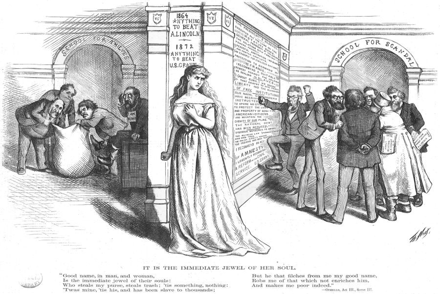

Name ______________________Date ______________Period __________
City Systems: Housing, Water, Transit, and the Machine
Directions: Work through all four stations. Each station treats one city system. For each one, name the problem, assign it to a cause, and record the evidence. After the stations, decide who was best placed to fix each system in 1890.
Part 1: Four Stations
Station 1: Housing
Source: Photograph by Jacob Riis, from How the Other Half Lives, 1890.
Lodgers in a crowded Bayard Street tenement, New York. Jacob Riis, 1889, Library of Congress.
Riis described a room not thirteen feet in either direction sleeping twelve men and women, some in bunks and the rest on the floor, lit by a kerosene lamp past midnight. The lodgers in this room paid five cents each for a spot to sleep. The building held many such rooms, and the city held thousands of such buildings.
1. What does the photograph show about how much space, light, and privacy a lodger's five cents bought?
2. Assign this problem to a cause. Was the main cause the lodgers themselves, the building's owner, or the speed of the city's growth? Use one detail from the source to defend your assignment.
Station 2: Water and Waste
Source: Labeled summary of conditions described in Jacob Riis, How the Other Half Lives, 1890, and in New York street cleaning reports of the 1890s.
In a typical tenement block, the sinks stood in the hallway so all tenants could reach them, and a single yard pump served the building. Privies stood in the same yard, close to the water supply. In the streets, ash, garbage, and horse manure collected faster than city crews removed them. In 1895 New York's street cleaning commissioner, George E. Waring, reorganized his department: sweepers worked set routes in white uniforms, and households separated garbage, ashes, and rubbish for different collections. Streets that had been filthy for years were visibly cleaner within months.
1. Trace the chain in this station: how could a privy in a tenement yard end as a case of disease in a family's room?
2. Waring changed no law about housing. Why did his reorganization still improve health, and what does that show about where the water and waste problem was located?
Station 3: Transit and the Street
Source: Detroit Publishing Company photograph, Mulberry Street, New York, about 1900.
Mulberry Street, New York, about 1900. Detroit Publishing Company, Library of Congress.
The photograph shows a downtown street doing several jobs at once. It is a market, with pushcarts and stalls on both sides. It is a road, with horse-drawn wagons moving through the crowd. It is a front yard for the tenements on both sides, whose residents shop, work, talk, and watch their children in it. Streetcars and elevated railways carried riders longer distances for a fare, and families who could pay moved to quieter streets at the edge of the city. Families who could not pay stayed here, where work was in walking distance.
1. Name two different jobs this one street is doing in the photograph, and cite a visible detail for each.
2. Who gained most from the new transit systems, and who was left in the crowded center? Explain the cause in one or two sentences.
Station 4: Machine Politics
Source: Thomas Nast cartoon on political corruption, Harper's Weekly, 1870s; text summary of the Tammany Hall machine under William M. Tweed.

Cartoon on political corruption by Thomas Nast, Harper's Weekly. Library of Congress.
Nast drew for readers who might not read an editorial but could read a picture. His target was the Tweed Ring, the circle around New York boss William M. Tweed, whose machine traded city jobs, contracts, and personal help for votes and took kickbacks on public spending. The same machine also found immigrants work, paid a family's rent in a hard month, and helped a widow or a man in jail. Both parts of that record were true at the same time, and voters weighed both.
1. What is Nast's argument about what machine corruption costs the public? Answer from the cartoon's imagery, not from the paragraph.
2. If the machine stole from the city, why did poor voters keep voting for it? Give the strongest reason the paragraph supports.
Part 2: Who Should Fix It?
For each system, choose who was best placed to fix its problem in 1890: M for a political machine, R for a reform administration, or P for a private company. Write the letter, then give the cause from your station work that decides it.
System
Choice
The cause that decides it
Housing
Water and waste
Transit
City government itself
Defend your hardest choice in a paragraph. Name the system, state who you chose to fix it, give the cause that decides it, and answer the strongest argument for one of the other two choices.
Teacher Answer Key
Station 1: Housing
What did five cents buy? A spot on the floor or in a bunk in a room shared with about a dozen people, with a stove, the lodgers' belongings, almost no open space, and no privacy. Students should cite the visible crowding, bunks, and bodies filling the frame.
Assign the problem to a cause. Strongest answers assign it jointly to the owner, who profited by packing lodgers in, and to the speed of growth, which produced more newcomers than sound housing. Answers blaming the lodgers must confront the source: lodgers paid for the only housing their wages reached.
Station 2: Water and Waste
Trace the chain. Waste from yard privies seeped toward the shared water supply; tenants drew water from the same yard pump and carried it to their rooms; contaminated water spread typhoid and similar disease through the building. Each step should be named.
Why did reorganization improve health? Regular routes, separated collection, and accountable crews removed waste before it accumulated and spread. The problem sat in the system of collection and administration, not only in household habits, which is why an administrative fix worked.
Station 3: Transit and the Street
Two jobs of one street. Any two with visible evidence: market (pushcarts, stalls, produce), road (wagons and carts in the roadway), residential front yard (residents and children in the street, goods hung from buildings), workplace (vendors and carters working in the open).
Who gained, who stayed? Riders with fare money gained distance, quieter streets, and newer housing at the edge of the city. The poorest families stayed in the center because they could not pay daily fares and needed work within walking distance. The cause is the fare combined with where jobs were.
Station 4: Machine Politics
Nast's argument. Corruption steals the public's good name and its money, and it corrupts elections and institutions themselves; students should point to the cartoon's figures, labels, and central figure rather than restating the paragraph.
Why did poor voters stay loyal? The machine delivered concrete, personal help that no one else offered: jobs, rent and coal in a hard month, naturalization help, and aid to a widow or a man in jail. Loyalty was a rational exchange from the voter's position, which is what made the machine durable.
Part 2: Who Should Fix It? (Grading Rubric)
Full credit should be awarded if the student:
Gives a choice for all four systems and ties each choice to the cause named in that station, not to a general preference.
Recognizes the defensible pattern without requiring it: reform administration for water and waste (Waring's evidence) and for government itself; private companies or a reform administration for transit, where companies in fact built the lines under city franchises; any of the three for housing if the cause is argued honestly, noting that machines had no plan for housing beyond patronage.
In the paragraph, answers the strongest argument for a rejected choice, for example that a machine knew the neighborhood personally, or that a private company could build faster than a city department.
Uses at least two station sources as evidence across the table and paragraph.